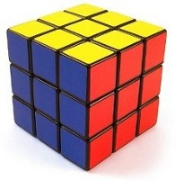

Rubik's Cube

Solving a fully or partially scrambled Rubik's cube is another hard problem we can solve with constraint programming.
The setup for this problem is simple and follows the same form as the Machinarium puzzle.
Board indicates all of the sides, Start indicates the starting scramble of the cube, and End indicates the
solved cube. Trans (the possible transitions) operates over the side object and can be clockwise or counter clockwise.
The side object has a DesObj (describe object) for representing each Rubik's Cube side.
It has been proven via intelligent brute-force that at most 20 moves are needed to solve a
Rubik's Cube from any start position. So the number of stages input parameter can
always be below 20.
The source and solution can be seen below.
source | solution